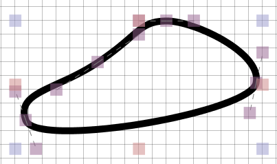
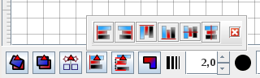
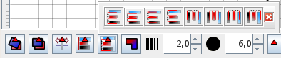

| home |
| Download |
| Features |
| Help Us |
| Manual |
| System requirements |
| License |
| Features |
| LaTeXDraw 2.0 |
| Shapes |
| Graphicals Features |
| Exportation |
| Drawing properties |
| Insert/import |
| Template |
| Check Version |
| How to start |
Graphicals FeaturesIn this part, we are going to talk about the graphical features of LaTeXDraw. But before that, we must explain what is a handler: it is a purple, green, red,... square delimiting a selected figure, like shown in the following picture:  You can move these handlers to change some properties of the figures like explained in the following paragraphes.
Select figures
You can select a figure by:
To unselect figures, click in an empty place in the draw panel. Move figures
To move select figures, you must :
Rescale figures
You can rescale a figure by dragging one of the handlers. If you have selected several figures, you can rescale all of them by dragging a handlers.
Put a figure in front, behind, ... an other figure With the toolbar you can place a figure:
Align several selected shapes

With the toolbar you can align several selected shapes. Each kind of alignment, aligns the selected shapes in function of a location (east, north,...). Distribe several selected shapes

With the toolbar you can distribute several selected shapes. Each kind of distribution, distributes the selected shapes in function of a position (the middle of the shapes, the bottom, the top,...). Rotate figures
To rotate selected figures, you must click on the following button in the toolbar . Then the delimitors will become green, it means that the rotation is activated. To disactived the rotation click on the rotation button.
Then, to rotate figures, you must drag of the delimitors. Join/separate several selected figures
LaTeXDraw can join several selected figures ; for that, select several figures and click on the following button in the toolbar. All these figures will be joined in order to create only one figure.
By the same way, you can separate joined figures using this button . Change the dimensions of the drawing
By default, the dimensions of the drawing are framed by all the figures. You can display the borders of the drawing with the following button in the "Draw" menu . For example, it can be :
 Where the borders of the drawing is the rectangle framing all the figures. You can change the dimensions of the drawing by :
 Now, You can change the dimensions of the sketch by dragging these delimitors. In a LaTeX document a change of the dimensions of the drawing change the disposition of the document like show in the following picture : 
|

| Copyright(c) 2005-2011 - arno_b - last changes: March 25 2006 |
| LaTeXDraw, a PSTricks generator or PSTricks editor for LaTeX |